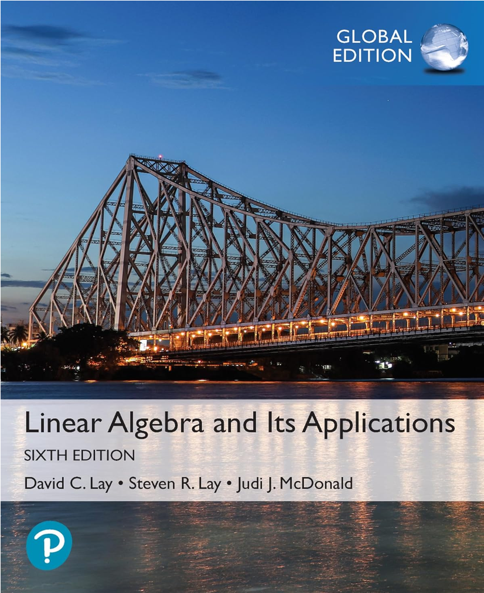

Theorems
This chapter serves as an index to all the theorems found in the textbook, 6th edition of linear algebra and its applications. Some of them have explanations, whenever I found it necessary.

Chapter 1.2 – Row Reduction and Echelon Forms
Textbook reference: p.38
Each matrix is row equivalent to one and only one reduced echelon matrix.
Textbook reference: p.46
A linear system is consistent if and only if the rightmost column of the augmented matrix is not a pivot column - that is, if and only if an echelon form of the augmented matrix has no row on the form
\[ \left[ 0 \; \cdots \; 0 \mid b \right] \qquad \text{where } b \ne 0 \]
If a linear system is consistent, then the solution set contains either:
- A unique solution, when there are no free variables
- Infinitely many solutions, when there are at least one free variable
A system of linear equations is said to be homogeneous if it can be written on the form \(A\vec{x}=\vec{0}\), where \(A\) is an \(m \times n\) matrix and \(\vec{0}\) is the zero vector in \(\mathbb{R}^n\). Such a system \(A\vec{x}=\vec{0}\) always has at least one solution, namely \(\vec{x}=\vec{0}\) (the zero vector in \(\mathbb{R}^n\)). This zero solution is usually called the trivial solution. For a given equation \(A\vec{x}=\vec{0}\), the important question is whether there exists a nontrivial solution, that is, a nonzero vector \(\vec{x}\) that satisfies \(A\vec{x}=\vec{0}\). Theorem 1.2.2 leads to the following fact:
The homogeneous equation \(A\vec{x}=\vec{0}\) has a nontrivial solution if and only if the equation has at least one free variable.
An indexed set of vectors \(\{\vec{v}_1, \cdots, \vec{v}_p\}\) in \(\mathbb{R}^n\) are said to be linearly independent if the vector equation
\[ x_1\vec{v}_1 + x_2\vec{v}_2 + \cdots + x_p\vec{v}_p = 0 \]
has only the trivial solution. The set \(\{\vec{v}_1, \cdots, \vec{v}_p\}\) is said to be linearly dependent if there exists weights \(c_1, \cdots, c_p\), not all zeros, such that
\[ c_1\vec{v}_1 + c_2\vec{v}_2 + \cdots + c_p\vec{v}_p = 0 \]
Chapter 1.4 – The Matrix Equation \(A\vec{x}=\vec{b}\)
Textbook reference: p.62
If \(A\) is an \(m \times n\) matrix, with columns \(\vec{a}_1, \cdots \vec{a}_n\), and if \(\vec{b}\) is in \(\mathbb{R}^m\), the matrix equation
\[ A \vec{x} = \vec{b} \]
has the same solution set as the vector equation
\[ x_1\vec{a}_1 + x_2\vec{a}_2 + \cdots + x_n\vec{a}_n = \vec{b} \]
which, in turn, has the same solution set as the system of linear equations whose augmented matrix is
\[ \begin{bmatrix} \vec{a}_1 & \vec{a}_2 & \cdots & \vec{a}_n \mid \vec{b} \end{bmatrix} \]
Textbook reference: p.63
Let \(A\) be an \(m \times n\) matrix. Then the following statements are logically equivalent. That is, for for a particula \(A\), either they are all true statements or they are all false.
- For each \(\vec{b}\) in \(\mathbb{R}^m\), the equation \(A\vec{x}=\vec{b}\) has a solution.
- Each \(\vec{b}\) in \(\mathbb{R}^m\) is a linear combination of the columns of \(A\).
- The columns of \(A\) span \(\mathbb{R}^m\).
- \(A\) has a pivot position in every row.
Textbook reference: p.65
If \(A\) is an \(m \times n\) matrix, \(\vec{u}\) and \(\vec{v}\) are vectors in \(\mathbb{R}^m\), and \(c\) is a scalar, then:
- \(A(\vec{u}+\vec{v}) = A\vec{u}+A\vec{v}\)
- \(A(c\vec{u}) = c(A\vec{u})\)
Chapter 1.5 – Solution Sets of Linear Systems
Textbook reference: p.73
Suppose the equation \(A\vec{x}=\vec{b}\) is consistent for some given \(\vec{b}\), and let \(\vec{p}\) be a solution. Then the solution set of \(A\vec{x}=\vec{b}\) is the set of all vectors of the form \(\vec{w}=\vec{p}+\vec{v}_h\), where \(\vec{v}_h\) is any solution of the homogenous equation \(A\vec{x}=0\).
Chapter 1.7 – Linear Independence
Textbook reference: p.86
An indexed set \(S= \{ \vec{v}_1, \cdots, \vec{v}_p \}\) of two or more vectors is linearly dependent if and only if at least one of the vectors in \(S\) is a linear combination of the others. In fact, if \(S\) is linearly dependent and \(\vec{v}_1 \ne 0\), then some \(\vec{v}_j \text{ ( with }j > 1)\) is a linear combination of the preceding vectors, \(\vec{v}_1, \cdots, \vec{v}_{j-1}\).
Textbook reference: p.87
If a set contains more vectors than there are entries in each vector, then the set is linearly dependent. That is, any set \(\{ \vec{v}_1, \cdots, \vec{v}_p\}\) in \(\mathbb{R}^n\) is linearly dependent if \(p>n\).
Textbook reference: p.87
If a set \(\{ \vec{v}_1, \cdots, \vec{v}_p\}\) in \(\mathbb{R}^n\) contains the zero vector, then the set is linearly dependent.
Suppose we have:
\[ \vec{v}_1 = \begin{bmatrix} 1 \\ 2 \end{bmatrix} , \quad \vec{v}_2 = \begin{bmatrix} 0 \\ 0 \end{bmatrix} \]
We could write:
\[ 0\vec{v}_1 + 1\vec{v}_2 = \vec{0} \]
Because one coefficient is nonzero, this is a nontrivial (see Theorem 1.2.2) linear combination that equals \(\vec{0}\). Therefore the set is linearly dependent.
Chapter 2.9 – Dimension and Rank
Source note: Dimension and Rank
If a matrix \(A\) has \(n\) columns, then
\[ \operatorname{rank}(A)+\dim\bigl(\operatorname{Nul}(A)\bigr)=n. \]
Source note: Dimension and Rank
Let \(H\) be a \(p\)-dimensional subspace of \(\mathbb{R}^n\).
- Any linearly independent set of exactly \(p\) vectors in \(H\) is a basis for \(H\).
- Any set of exactly \(p\) vectors that spans \(H\) is a basis for \(H\).
Source note: Dimension and Rank
Let \(A\) be an \(n\times n\) matrix. The following statements are equivalent: for a given \(A\), either they are all true or they are all false.
- \(A\) is invertible.
- \(A\) is row equivalent to the \(n\times n\) identity matrix.
- \(A\) has \(n\) pivot positions.
- The equation \(A\vec{x}=\vec{0}\) has only the trivial solution.
- The columns of \(A\) form a linearly independent set.
- The linear transformation \(\vec{x}\mapsto A\vec{x}\) is one-to-one.
- For every \(\vec{b}\in\mathbb{R}^n\), the equation \(A\vec{x}=\vec{b}\) has at least one solution.
- The columns of \(A\) span \(\mathbb{R}^n\).
- The linear transformation \(\vec{x}\mapsto A\vec{x}\) maps \(\mathbb{R}^n\) onto \(\mathbb{R}^n\).
- There is an \(n\times n\) matrix \(C\) such that \(CA=I\).
- There is an \(n\times n\) matrix \(D\) such that \(AD=I\).
- \(A^T\) is invertible.
- The columns of \(A\) form a basis for \(\mathbb{R}^n\).
- \(\operatorname{Col}(A)=\mathbb{R}^n\).
- \(\operatorname{rank}(A)=n\).
- \(\dim\bigl(\operatorname{Nul}(A)\bigr)=0\).
- \(\operatorname{Nul}(A)=\{\vec{0}\}\).
Chapter 3.1 – Introduction to Determinants
Source note: Introduction to Determinants
The determinant of an \(n\times n\) matrix can be computed by expanding along any row \(i\) or any column \(j\):
\[ \det(A)=\sum_{k=1}^{n}a_{ik}C_{ik} \qquad\text{or}\qquad \det(A)=\sum_{k=1}^{n}a_{kj}C_{kj}. \]
Here, \(C_{ij}=(-1)^{i+j}\det(A_{ij})\) is the cofactor of \(a_{ij}\).
Source note: Introduction to Determinants
If \(A\) is an upper- or lower-triangular matrix, then its determinant is the product of the entries on its main diagonal:
\[ \det(A)=a_{11}a_{22}\cdots a_{nn}. \]
Chapter 4.1
Textbook reference: p.38
Each matrix is row equivalent to one and only one reduced echelon matrix.